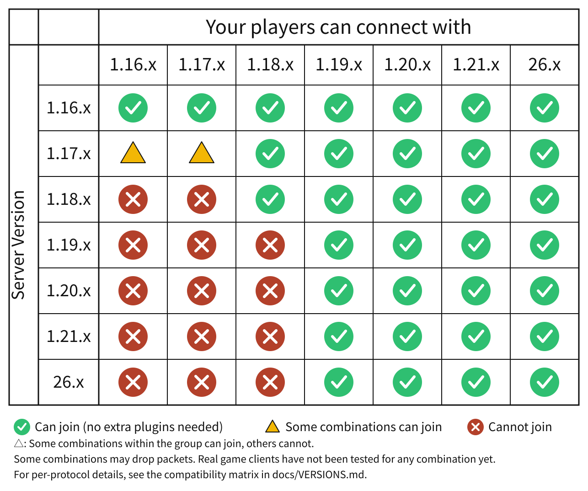

Supported versions
From 1.16 to 26.3, 28 protocols are supported. Client × server is 28 × 28 = 784 combinations. The final goal is to support every version from 1.0 to the latest.
Supported Verified at the protocol level In progress Under development Planned Not started
"Supported" means protocol-level verification (tests with a fake client and a genuine vanilla server) has passed. No combination has been checked with a real game client yet. Of the 784 combinations, 6 cells including 1.18.2 have been confirmed in integration tests, and the rest are being checked in turn.
Java Edition
| Version | Protocol | Status | Java | Resource pack format | Notes |
|---|---|---|---|---|---|
| 1.16 | 735 | Supported | 8 | 5 | |
| 1.16.1 | 736 | Supported | 8 | 5 | |
| 1.16.2 | 751 | Supported | 8 | 6 | |
| 1.16.3 | 753 | Supported | 8 | 6 | |
| 1.16.4 / 1.16.5 | 754 | Supported | 8 | 6 | |
| 1.17 | 755 | Supported | 16 | 7 | |
| 1.17.1 | 756 | Supported | 16 | 7 | |
| 1.18 / 1.18.1 | 757 | Supported | 16 | 8 | |
| 1.18.2 | 758 | Supported | 17 | 8 | No configuration phase. Legacy chat (unsigned) |
| 1.19 | 759 | Supported | 17 | 9 | Signed chat was introduced here (first inline signature format) |
| 1.19.1 / 1.19.2 | 760 | Supported | 17 | 9 | One pack shared by both versions. Chat signature format differs from 759 |
| 1.19.3 | 761 | Supported | 17 | 12 | |
| 1.19.4 | 762 | Supported | 17 | 13 | The foundation of the 1.19 series. No configuration phase |
| 1.20 / 1.20.1 | 763 | Supported | 17 | 15 | The first supported version |
| 1.20.2 | 764 | Supported | 17 | 18 | |
| 1.20.3 / 1.20.4 | 765 | Supported | 17 | 22 | |
| 1.20.5 / 1.20.6 | 766 | Supported | 21 | 32 | Items switched to the data component system |
| 1.21 / 1.21.1 | 767 | Supported | 21 | 34 | |
| 1.21.2 / 1.21.3 | 768 | Supported | 21 | 42 | |
| 1.21.4 | 769 | Supported | 21 | 46 | |
| 1.21.5 | 770 | Supported | 21 | 55 | |
| 1.21.6 | 771 | Supported | 21 | 63 | |
| 1.21.7 / 1.21.8 | 772 | Supported | 21 | 64 | One pack shared by both versions |
| 1.21.9 / 1.21.10 | 773 | Supported | 21 | 69 | One pack shared by both versions |
| 1.21.11 | 774 | Supported | 21 | 75 | |
| 26.1 / 26.1.1 / 26.1.2 | 775 | Supported | 25 | 84 | 26.1.1 / 26.1.2 also share the same protocol 775 |
| 26.2 | 776 | Supported | 25 | 88 | Chaos Cubed. Released 2026-06-16. Data version 4903 |
| 26.3 | 777 | Supported | 25 | 97 | Confirmed to start with the fat jar |
759 and 760 both have resource pack format 9, but the files are separate. The Java requirement is for running the internal server. On the client side, the requirement is the same as vanilla for each version.
Compatibility matrix
A list of which player versions can connect to which server versions. No extra plugins such as ViaVersion are needed. Players on newer versions can join older servers, but some combinations do not allow older players to join newer servers.
Can join (no extra plugins needed) Some combinations can join Cannot join
△ is a cell where some combinations within the group can join and others cannot. 1.17.x servers × 1.16.x clients can join only in the case of a 1.17 server (755), and cannot join a 1.17.1 server (756). 1.17.x servers × 1.17.x clients can join except for the combination of a 1.17 client → 1.17.1 server.
The ✕ marks in 26.x are confirmed cases of older clients being unable to join a 26.1 (775) server. Combinations of 26.3 (777) / 26.2 (776) servers with older clients are unconfirmed. The ✓ marks in 26.x and the 1.18.x cells are also unconfirmed for the 26.2 (776) / 1.18.2 (758) combinations.
Some combinations may drop packets (with restrictions). For the detailed support status of each protocol, see the compatibility matrix in docs/VERSIONS.md in the repository. No combination has been checked with a real game client yet.

Bedrock Edition
Bedrock supports 33 RakNet protocols (575–2193), covering 1.19.70 to 26.52. It translates Java blocks, biomes, and entities to Bedrock. It listens on UDP port 19132.
- Supported: Bedrock 1.19.70–26.52 (protocols 575–2193). Translation of chunks, block states, and entities; chat, movement, attacks, and interaction supported.
- Not supported: Bedrock 26.60 / 26.62 (protocol 2225) is NetherNet-based and unsupported; a connecting client receives an unsupported disconnect message. Inventory is also unsupported.
Future plans
| Version | Status | Notes |
|---|---|---|
| 1.15.x and earlier (1.0–1.15.x) | Planned | Supported up to 1.16. Next we will decide whether to go back to 1.15.x and earlier |
| April Fools versions (2.0, 15w14a, 20w14∞, 24w14potato, 25w14craftmine, etc.) | Planned | Because both the protocol and the contents differ from normal releases, each needs its own dedicated support |
Development branches for each version can be found in the repository's branch list.